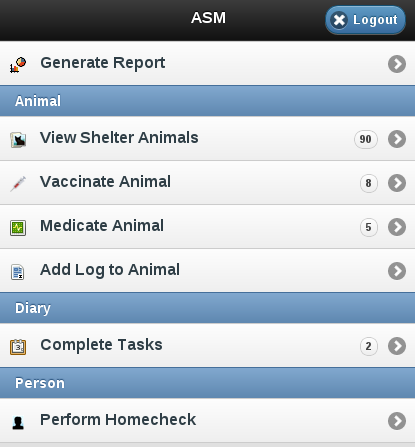
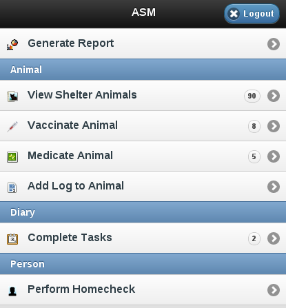
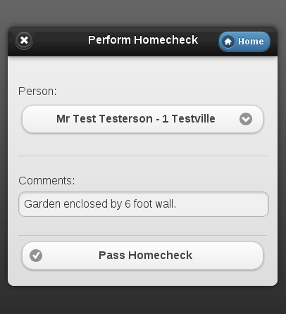

15 Mobile Interface
In addition to the web interface, ASM has a special interface for mobile devices, such as your iPhone, Blackberry, WebOS or Android handset.
 

To access the mobile interface, follow the mobile link at the top right of the login screen.
You can generate any report that doesn't require criteria and view the details of all the current shelter animals.


You can also mark vaccinations and medical treatments given, add logs to animals, complete diary tasks and mark homechecks as performed. This last item is very useful for volunteers going out to homecheck owners prior to adoption.